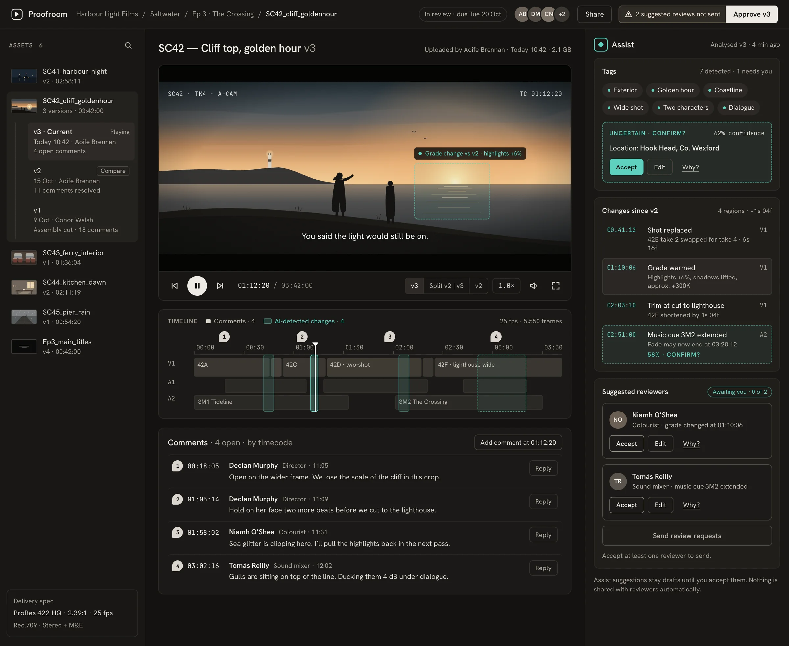

I design products where people and AI make decisions together.
Product designer with six years across AI tools, fintech and B2B. Based in Dublin, open to relocating.

More work
- ICICI Bank A net banking login redesigned around forgetting. Verification completion rose from 60% to 82%, on a design system built from scratch. 2022
Things I've built
- Job tracking agent Tracks a job search end to end. I designed how it breaks down the work, what it checks, and when it hands back to me. Claude API
- Job monitor agent Watches for new roles that fit and tells me when something is worth a look. Claude API
- Content agent Writes posts for @archivingpresence, an account about interactive contemporary art. Claude API